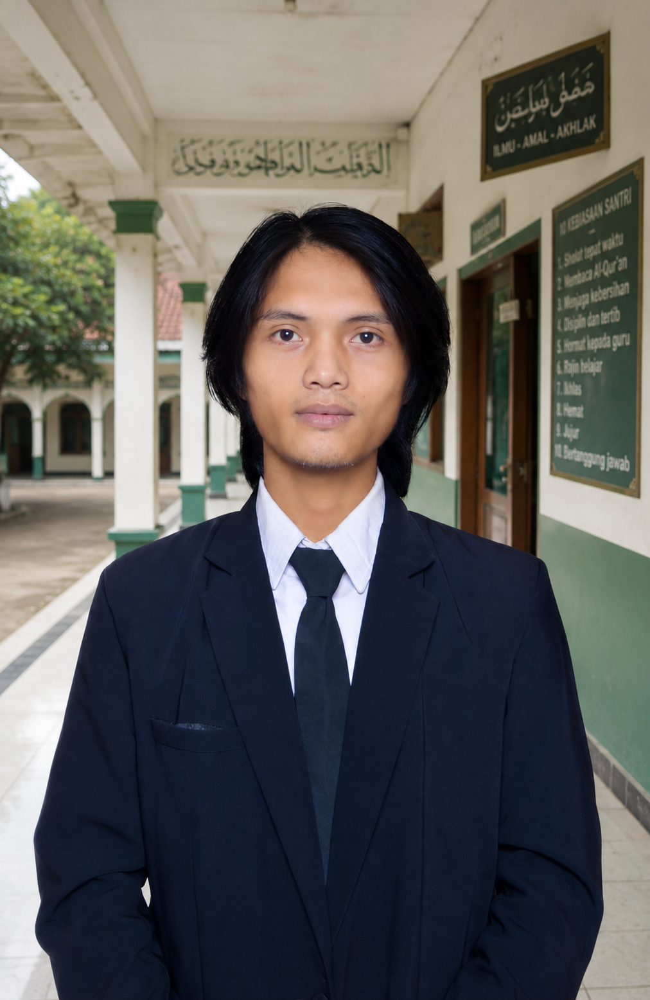

PKBM Al-Falah Ciranjang resmi berdiri pada 7 April 2021 dengan Nomor SK Pendirian 423/VII/2021/Ks, di bawah naungan Kementerian Pendidikan dan Kebudayaan (kini Kemendikdasmen). Berdiri di bawah naungan Yayasan Pondok Pesantren Al-Falah Al-Musri (berdiri sejak 1971), PKBM Al-Falah Ciranjang didirikan pada 2019 untuk memperluas akses pendidikan kesetaraan bagi masyarakat Ciranjang, melengkapi sistem pendidikan pesantren yang sudah berjalan sejak lama.
Berdirinya Pondok Pesantren Al-Falah Al-Musri oleh Al-Maghfurlah Mama Ajengan Solihin.
Ponpes Al-Falah Al-Musri resmi berbadan hukum (SK Kemenkumham) dan terdaftar Nomor Statistik Pondok Pesantren dari Kemenag.
Yayasan mendirikan PKBM Al-Falah Ciranjang sebagai lembaga pendidikan formal/kesetaraan.
Diterapkan Kurikulum Almusri' Pusat, jenjang I'dadiyyah sampai Aliyyah.
Terwujudnya generasi beriman, bertakwa, barakhlakul karimah, cerdas, kreatif, serta mampu berperan aktif dalam masyarakat sesuai dengan nilai-nilai islam
Membentuk santri berakhlakul karimah berlandaskan aqidah Ahlussunah Wal Jama'ah melalui kajian kitab kuning.
Meningkatkan literasi teknologi melalui pembelajaran komputer agar santri adaptif terhadap perkembangan digital.
Membangun jiwa kewirausahaan yang kreatif dan inovatif melalui pelatihan keterampilan praktis (bertani, menjahit, dll).
Menanamkan kemandirian dan kedisiplinan sebagai bekal hidup bermasyarakat dan menjawab tantangan global.

Afif Sirojul Munir menempuh pendidikan mulai dari SD Negeri Ciranjang 4, MTs Al-Mubarokah, hingga menimba ilmu di Pondok Pesantren Miftahulhuda Al-Musri'. Beliau meraih gelar sarjana Manajemen dari STIE Dharma Negara, dan kini melanjutkan studi Magister Manajemen Pendidikan Islam di UIN Sunan Gunung Djati Bandung — bekal keilmuan yang terus diterapkan dalam mengelola PKBM Al-Falah Ciranjang secara profesional.